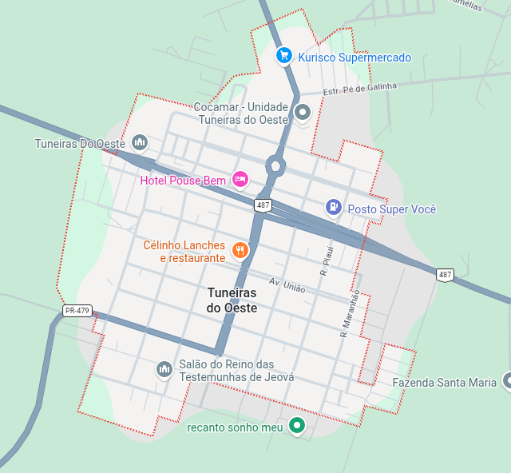

Localizado na região noroeste do Paraná, com cerca de 8.095 habitantes (estimativa IBGE 2024). A cidade é conhecida pelo seu forte contato com a natureza e por uma história ligada aos tropeiros e à Estrada da Boiadeira.
